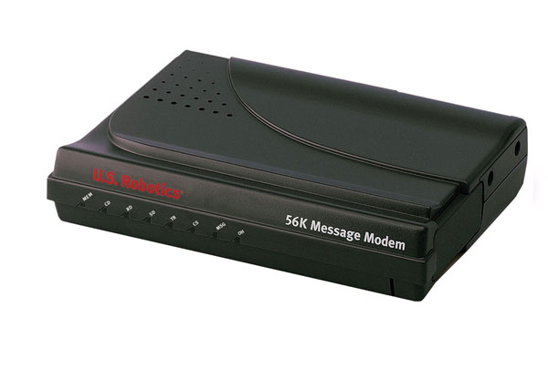
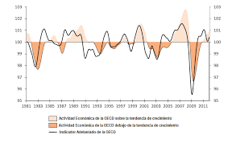
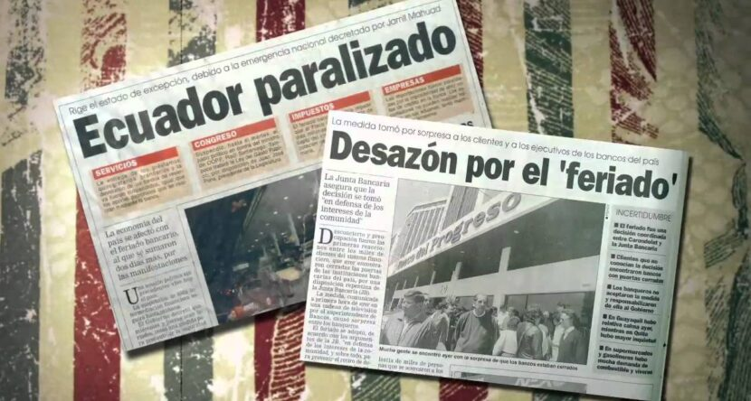

1995-1997: Expansión Acelerada de Internet en Ecuador
Internet Comercial y Competencia en el Mercado Ecuatoriano
Liberalización y competencia: A partir de 1995, el mercado de servicios Internet en Ecuador experimentó una significativa liberalización y aumento en competencia. Mientras que en los primeros años el acceso a Internet había estado principalmente limitado a instituciones académicas y de investigación a través de proveedores como ECUANEX, a mediados de la década comenzaron a emerger proveedores comerciales que ofrecían servicios a empresas y usuarios individuales. Esta transición hacia un modelo comercial reflejó tendencias globales y fue facilitada por reformas regulatorias en el sector de telecomunicaciones.
La UCE frente a la expansión comercial:
Con la llegada de proveedores comerciales (ISPs) al país, la Universidad Central del Ecuador comenzó a adquirir enlaces dedicados, aunque de muy bajo ancho de banda. Durante este periodo, la Facultad de Ingeniería (FICA) y la biblioteca general habilitaron los primeros "centros de cómputo abiertos", permitiendo por primera vez que estudiantes regulares (no solo investigadores o autoridades) tuvieran turnos de acceso a la World Wide Web para realizar consultas bibliográficas, sentando un hito en la democratización tecnológica interna.
Modelos de acceso comercial emergentes (1995-1997):
- Acceso telefónico (dial-up): Servicio predominante para usuarios individuales y pequeñas empresas, generalmente a velocidades de 14.4K a 33.6K bps
- Líneas dedicadas: Para empresas e instituciones con mayores necesidades, generalmente a velocidades de 64K a 512K bps
- Centros de acceso público: Establecimiento de locutorios o "cybercafés" que ofrecían acceso por hora
- Servicios de valor agregado: Hospedaje web, desarrollo de sitios, correo corporativo, y otros servicios especializados
- Modelos de precios: Evolución desde tarifas por tiempo de uso hacia planes mensuales con horas incluidas

Desarrollo de Infraestructura Académica y Proyectos de Cooperación
Iniciativas regionales y multilaterales: Durante 1996-1997, varias iniciativas de cooperación internacional apoyaron el desarrollo de infraestructura Internet en instituciones académicas ecuatorianas. Proyectos financiados por organismos como la Unión Europea, el Banco Interamericano de Desarrollo, y agencias de cooperación bilateral buscaron reducir la brecha digital en educación superior mediante inversiones en conectividad, equipamiento, y capacitación. Estas iniciativas generalmente adoptaron un enfoque de desarrollo de capacidades, combinando componentes de infraestructura física con formación de recursos humanos y fortalecimiento institucional.
Regulación y primeros títulos habilitantes
A nivel nacional, el antiguo CONATEL (Consejo Nacional de Telecomunicaciones) reguló el acceso a Internet como servicio tecnológico y otorgó los primeros títulos habilitantes a proveedores, permitiendo una expansión más organizada del servicio. Esto dio un marco legal para que las universidades públicas justificaran presupuestos estatales destinados exclusivamente a la "telemática".

1998: Señales de Advertencia y Vulnerabilidades
Contexto Macroeconómico Nacional y sus Implicaciones Tecnológicas
Durante 1998, se hicieron evidentes signos crecientes de vulnerabilidad económica en Ecuador que eventualmente conducirían a la crisis de 1999. Varios factores macroeconómicos convergentes crearon un contexto desfavorable para inversiones sostenidas en tecnología educativa: déficit fiscal creciente, pérdida de reservas internacionales, presión sobre el tipo de cambio, aumento de la deuda externa, y desaceleración del crecimiento económico. Estos factores macroeconómicos adversos comenzaron a afectar las finanzas institucionales y la capacidad de mantener inversiones en modernización tecnológica.
Planes frenados en la Universidad Central:
Antes de que la crisis estallara por completo, la UCE se encontraba en fases de planificación de un ambicioso proyecto: crear un anillo de fibra óptica que uniera todas las facultades de la Ciudadela Universitaria para reemplazar las frágiles redes locales (LAN) basadas en cable coaxial. Sin embargo, debido al inicio de la devaluación del Sucre en 1998, el presupuesto para importar este hardware y cableado (cotizado enteramente en dólares) se desfasó por completo, forzando a la universidad a suspender el proyecto y mantener la infraestructura existente.

Estrategias de Adaptación Institucional Ante la Incertidumbre
Frente a las señales de deterioro económico durante 1998, instituciones de educación superior comenzaron a desarrollar diversas estrategias de adaptación para proteger sus inversiones tecnológicas y mantener servicios esenciales. Estas estrategias incluyeron medidas tanto reactivas como proactivas, reflejando diferentes evaluaciones de la profundidad y duración potencial de la crisis emergente.
Tipos de estrategias de adaptación identificables:
- Revisión de prioridades de inversión: Postergación de proyectos expansivos en favor del mantenimiento de infraestructura existente
- Renegociación de contratos: Búsqueda de términos más favorables con proveedores de equipos y servicios de Internet
- Consolidación de servicios: Unificación de infraestructura y reducción de redundancias para optimizar uso de recursos energéticos y de red
- Exploración de alternativas de código abierto: Primera ola de evaluación seria de sistemas GNU/Linux como alternativa a licencias de Windows/Unix costosas
- Fortalecimiento de mantenimiento preventivo: Extensión de la vida útil de equipos antiguos mediante cuidado proactivo
1999: La Crisis del Feriado Bancario y su Impacto
Congelamiento del Sistema Financiero (Marzo 1999)
Evento disruptivo histórico: El feriado bancario declarado en marzo de 1999 representó un punto de inflexión crítico no solo para la economía ecuatoriana en general, sino específicamente para la infraestructura tecnológica en instituciones de educación superior. El congelamiento de depósitos y la paralización del sistema de pagos tuvieron efectos inmediatos y severos en la capacidad de las instituciones para mantener operaciones tecnológicas normales. Contratos de mantenimiento no pudieron ser pagados, renovaciones de equipos programadas fueron canceladas, servicios de conectividad enfrentaron interrupciones por falta de pago, y proyectos de expansión tecnológica fueron suspendidos indefinidamente.
Efectos inmediatos documentables en las universidades:
- Interrupción de pagos internacionales: Imposibilidad de pagar servicios de conectividad (backbone internacional) y licencias de software privativo.
- Deterioro de equipos: La falta de repuestos importados y mantenimiento profesional llevó a un fallo acumulativo en centros de cómputo.
- Racionamiento digital: Restricción del acceso a Internet solo para autoridades o procesos críticos, eliminando el acceso libre a estudiantes.
- Pérdida de talento humano: Fuga de cerebros de técnicos e ingenieros de sistemas universitarios hacia el sector privado o mediante migración al exterior.

La crisis económica y el "gran salto al vacío" de la dolarización. Repositorio Digital FLACSO Ecuador
Estrategias de Supervivencia y Resiliencia Tecnológica en la UCE
Frente a las severas restricciones impuestas por la devaluación (que pulverizó los presupuestos universitarios en Sucres), la educación superior pública desarrolló estrategias extremas de supervivencia. En universidades de ingreso masivo, la situación requirió creatividad técnica para no apagar por completo los servicios.
La respuesta técnica de la Universidad Central:
Para 1999, comprar licencias de Windows NT o servidores nuevos era imposible. Ante esto, ingenieros y estudiantes tesistas de la Facultad de Ingeniería (FICA) de la UCE adoptaron una estrategia radical: el reciclaje de hardware y la migración a Linux. Computadoras "obsoletas" (386 y 486) que habían sido descartadas fueron ensambladas con piezas sueltas (modelo Frankenstein) e instaladas con distribuciones tempranas de Linux (como Slackware o Red Hat) para funcionar como enrutadores y servidores proxy. Esto permitió a la universidad mantener su red viva sin gastar un solo dólar en licencias corporativas.
Balance Histórico: Dualidad y Transición
Legado del Período: Avances Preservados y Lecciones Aprendidas
A pesar de la severidad de la crisis de 1999, el período 1995-1999 en su conjunto dejó un legado tecnológico significativo que proporcionaría bases para la recuperación y desarrollo posterior. Las instituciones aprendieron dolorosamente que la tecnología no era un lujo opcional, sino un componente operativo crítico que requería resiliencia.
- Capital humano resiliente: Formación de técnicos e ingenieros capaces de mantener redes con cero presupuesto y herramientas Open Source.
- Infraestructura básica preservada: El cableado y la topología de red instalada entre 1996 y 1998, aunque no se expandió, se mantuvo funcional.
- Conciencia administrativa: Reconocimiento institucional de los riesgos de la dependencia absoluta de licencias de software comerciales extranjeras.
Del Siglo XX al Siglo XXI en la Tecnología Educativa
El período 1995-1999 encapsula la dramática dualidad que caracterizó la transición de la educación superior ecuatoriana hacia el nuevo milenio: una expansión acelerada impulsada por la novedad del Internet comercial, frenada abruptamente por el colapso financiero del país. Al concluir el siglo XX, la Universidad Central del Ecuador y sus pares emergieron con una infraestructura dañada, pero con un capital humano probado en la crisis.
Legado histórico: Estas dos décadas sentaron las bases para la posterior dolarización y la completa reinvención digital del país en el año 2000.